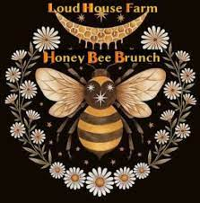
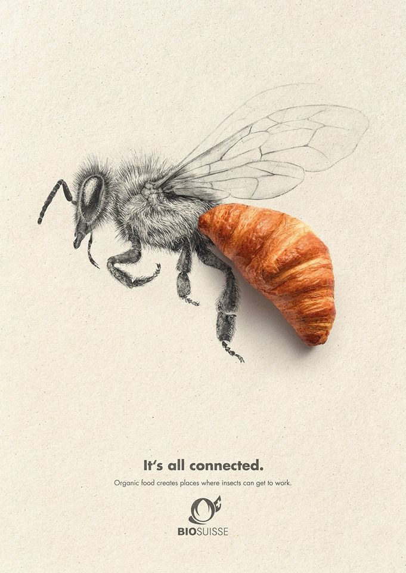

The Bee Movie
Home
Bee Movie Script
Bee Movie Gallery(WARNING!!! It is horrifying)
Bee Movie Links
Resources
About
Socials
Snapchat
Instagram
Twitter
Facebook
Discord
Whatsapp
Contacts
Bee Movie Links
Bee Movie Script Source
Berry Bee Benson Picture
Bee Movie Poster
Berry screaming
Bee facts
Bee Facts
Male bees (drones) have bigger eyes to help them find the Queen Bee.
Bees love blue and love cluster plants like lavender and rosemary.

